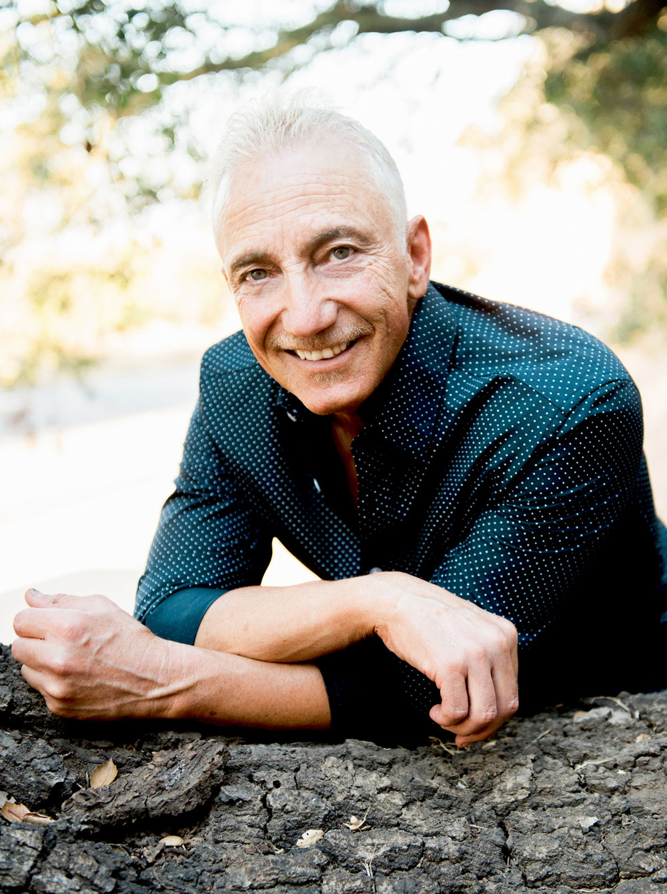
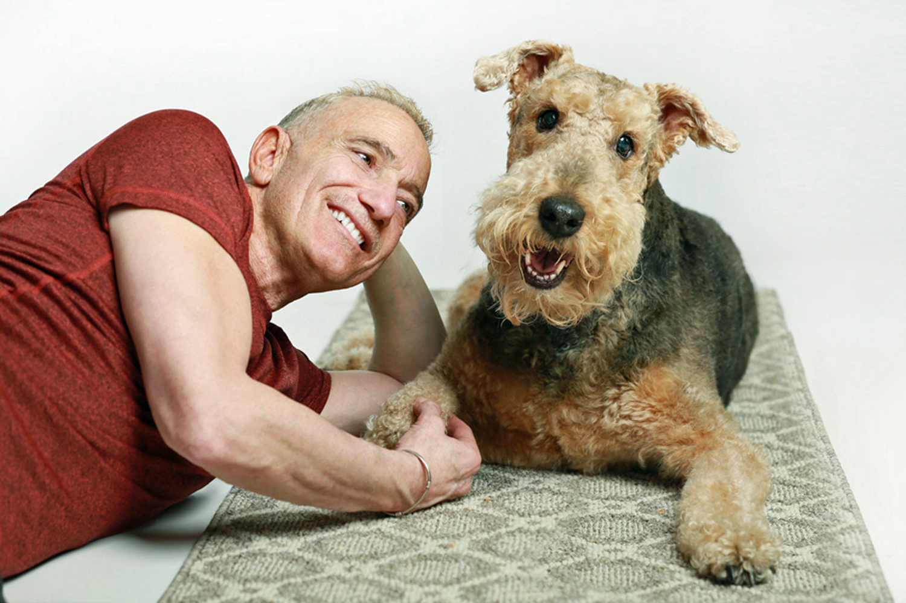

JDS is…A boutique personal public relations company with strong ties to an extensive network of editors, talent bookers, journalists, and entertainment heavy hitters. At the helm is Jay D. Schwartz, a seasoned publicist renowned for his personal approach to publicity and his unwavering dedication to his clients. Hailing from New York with the professional zeal of “an aggressive New Yorker,” Jay has amassed a diverse and eclectic roster of clients over the years, including industry icons such as Scott Bakula, Cheryl Ladd, Jaclyn Smith, Otis Williams and The Temptations, Barry Shabaka Henley, Rocky Carroll, Dustin Nguyen, Louis van Amstel, Kool & The Gang, Carrie Ann Inaba, and many more.
Jay believes in fairness, not greediness. Rates at JDS are reasonable and commensurate with each talent at any given time in their career. Jay’s longtime friend, partner, and mentor, Nanci Ryder, always taught him, “You are signing a client for a career, not for just a project. As their success grows, so will yours. Never let money get in the way if you want to work with someone. There is always a way to make a deal, as it really does all work out in the end. The passion and cream always rise to the top.” At JDS, we don’t believe in contracts, we work month to month. If we are meant to work together, we will. If not, we will shake hands and part ways. If you’d like to discontinue services, we do require notice thirty days in advance.
Jay’s journey in public relations began in the world of theatre, where he quickly made a name for himself working on Broadway hits like “Nicholas Nickleby,” “42nd Street,” and “Lena Horne: The Lady and Her Music.” His talent and passion for the craft soon led him to work with a variety of clients, from the likes of Patti LaBelle, Al Green, and Elliot Gould, to the productions of “Night Mother,” “Hurlyburly,” and “Ma Rainey’s Black Bottom” with Broadway producers Fred Zollo and Barbara Ligeti.
After working so heavily in the theatre space, as a favor to help out a friend, Jay pivoted to opening and running one of New York City’s hottest night clubs—Chippendales, which became a worldwide phenomenon.
In 1985, Jay made the move to Los Angeles, joining Nanci Ryder Public Relations, which later became Baker/Winokur/Ryder Public Relations (BWR). In 1995, he took the leap to open his own PR firm, JDS. Throughout his career, Jay has represented a diverse array of talent, including Christopher Walken, Drew Barrymore, Jean Claude Van Damme, Mary Wilson, Lauren Bacall, Danny Aiello, Anita Baker, Luc Robitaille, Sugar Ray Leonard, Gladys Knight, and many others.
Jay ran the campaigns which led to Oscar nominations for both Lauren Bacall and Danny Aiello. Jay understands that PR is not only about getting publicity, but also about protecting clients from the wrong kind of publicity. His crisis management chops were evident for a few of his high-profile clients. “It’s all a matter of how you frame a situation and how it is perceived.”


What sets Jay apart is his personal touch. Talent executives, editors, and bookers receive thousands of pitches per week. For this reason, Jay believes that the power of a personal phone call, which builds upon an existing relationship, will always be greater than a simple email or text. “The entertainment industry is built on relationships,” which is why Jay meticulously maintains his. His ability to turn a “no” into a “yes” is a testament to his tenacity and creativity, making him a trusted partner in navigating the ever-changing landscape of the entertainment industry.
Jay’s people-oriented, old-fashioned approach to publicity was evident in his publicity plan for “The Accidental Getaway Driver.” The film stars his client Dustin Nguyen (whom Jay has worked with since 1987, when Dustin was starring on 21 Jump Street) and ultimately won Sing J. Lee the Sundance Directing Award. “Entertainment is a massive industry but a small community. It’s all about who you know, not what you know; although you better know the what.” Jay’s 40-year success in PR proves that he knows who’s who AND what’s what.